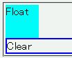
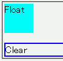

clearプロパティによってフロートとの隣接を抑制した要素に上マージンを指定すると、フロートの下に指定値分の幅の上マージンを設置する。
<div style="float:left; width:3em; height:3em; margin:0; background:aqua;"> Float</div> <div style="clear:left; margin-top:1em; border:2px solid blue;"> Clear</div>
フロートの高さが3emであるのに対し、後続のdiv要素の上マージンの指定値が1emしかないので、フロートの下端と後続要素のボーダー上端は接するはずです。
Netscape7.1標準モード
Opera7.23標準モード
clearプロパティの「フロートに後続する要素のボックスを先行するフロートに隣接させない」効果は、後続する要素の上マージンの値を調節することで実現しています。従って前出の例示の場合は、後続する要素へ実際に設置するmargin-topの値を3emに変えることでclearプロパティの効果を実現することになります。
そもそもフロートは通常フローに属していないため、位置指定されていない（position:static; である）ブロックボックスのマージンがフロートのボックスに対して設置されることはないはずです。
Opera6.06、Opera7.23の標準モードと互換モードで不具合の発生を確認しました。